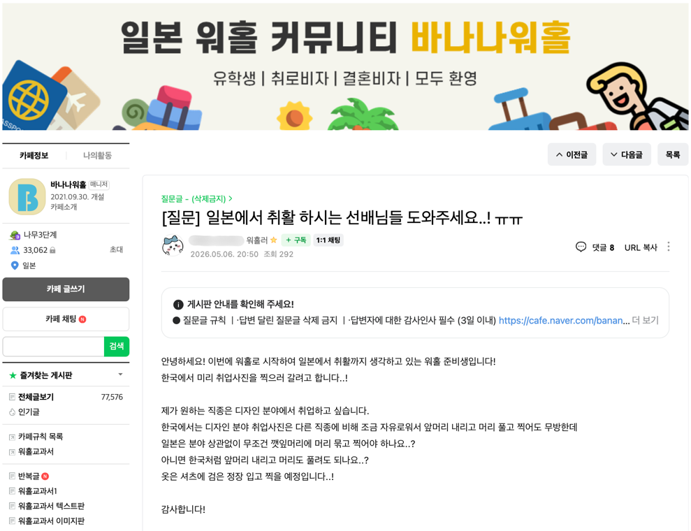
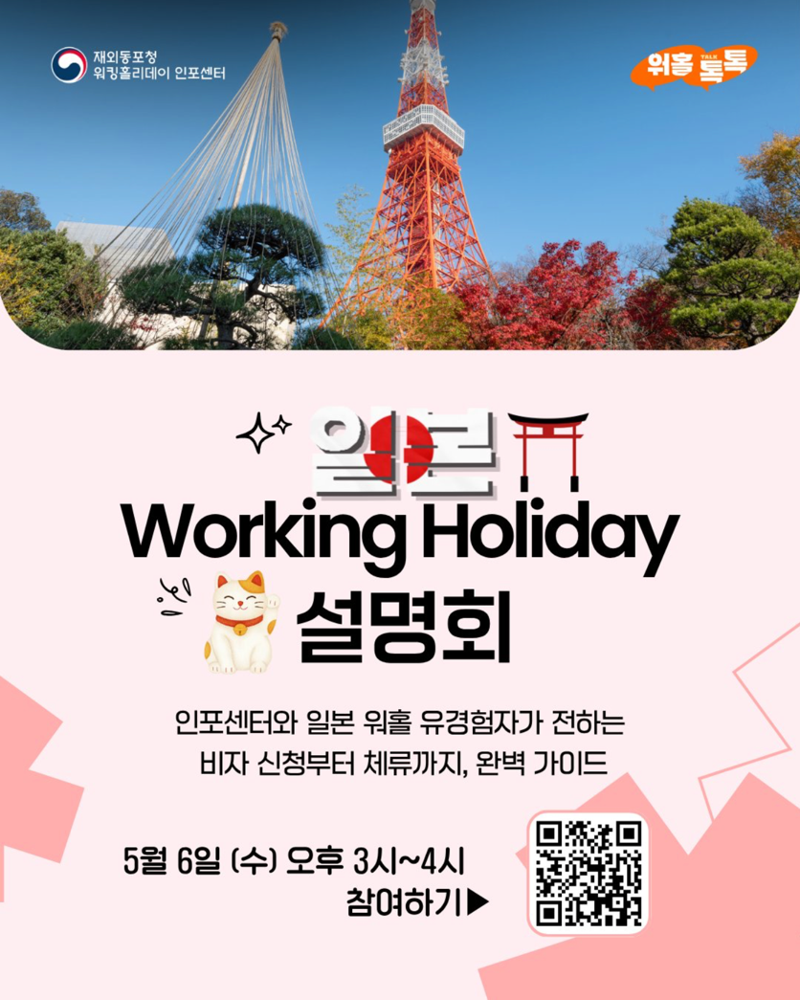

지난 2024년 발급된 워킹홀리데이 비자 수가 3만 8,590건을 기록했다. 2022년에 비해 두 배 가까이 되는 청년들이 워킹홀리데이를 선택한 것이다. 워킹홀리데이(이하 워홀)는 만 18~30세 청년이 협정 체결 국가에서 최대 1년간 관광, 취업, 어학연수 등 다양한 경험을 쌓을 수 있도록 마련된 제도다. 대한민국 청년들이 이토록 열정적으로 '해외 살이'에 나서는 이유는 무엇일까.
저마다의 이유로 떠나는 청년들
"간단히 말해 리프레시가 필요했어요."
일본으로 워홀을 떠난 23세 문윤정 씨는 취업 준비에 지쳐 잠시 한국을 벗어나고 싶었다고 말했다. 거창한 계획보다는, 숨 한번 고르고 싶다는 솔직한 마음이었다.
호주 워홀을 선택한 28세 김진렬 씨의 출발점도 거창하지 않았다. 그저 더 넓은 세상을 직접 경험해보고 싶었다고 했다. 호주에서의 경험은 그에게 "해외에서 일하고 싶다"는 생각을 심어주었고, 귀국 후 K-move 프로그램을 통해 미국 인턴십으로 이어졌다.
또 다른 이유도 있다. 일본 워홀 설명회의 한 참가자는 "관광지가 아닌 일상적인 일본을 경험하고 싶었다"고 했다. 유명한 곳만 돌아다니는 여행이 아쉬워, 살아보듯 방방곡곡을 다니고 싶었다는 것이다.
리프레시, 막연한 해외 경험의 욕구, 더 알고 싶다는 바람. 이유는 제각각이지만, 해외로 나가고 싶은 청년들은 분명히 늘고 있다. 이들은 서로의 도움을 받으며 워홀을 준비한다.
서로 돕고 돕는 워홀 준비
워홀을 준비하는 청년들은 네이버 카페와 같은 온라인 커뮤니티를 통해 선배 워홀러들의 경험을 참고한다. 문윤정 씨는 일본 워홀을 준비하며 일본 워홀 대표 네이버 카페인 '바나나 워홀'을 통해 정보를 얻었다. 현재 '바나나 워홀'에는 3만명이 넘는 사람들이 활동 중이다. 워홀을 준비 중인 사람, 워홀에 가 있는 사람, 워홀 후 귀국한 사람들이 서로 소통하며, 필요한 정보를 주고 받는다. 구인, 중고 거래도 이루어진다.

유튜브를 통한 정보 공유도 활발하다. 워홀러들은 자신의 일상 영상이나 Q&A 영상을 올리고, 댓글을 통해 질문과 답변이 오가며 실제 경험이 생생하게 전달된다. 문윤정 씨도 자신이 받았던 도움을 기억하며, 지금은 일본 워홀에 관한 유튜브 채널을 직접 운영하고 있다.
정부의 워홀 지원
정부도 청년들의 도전을 적극 지원하고 있다. 외교부 산하 워킹홀리데이 인포센터는 국가별 비자 절차와 초기 정착 가이드를 제공하며, 워홀을 준비하는 청년들이 필요한 도움을 받을 수 있도록 노력하고 있다. 인스타그램, 페이스북, 유튜브, 네이버 카페 등 다양한 온라인 채널을 운영해 실질적인 정보와 팁을 꾸준히 공유한다.
또한 국가별 워킹홀리데이 설명회를 개최하기도 한다. 지난 5월 6일에는 '워홀프렌즈(워홀 경험자)'의 경험을 듣는 자리가 마련되었다. 이 밖에도 방문 상담이나 전화 상담을 통해 1:1 맞춤형 지원도 받을 수 있다.

워홀을 다녀온 청년들에 대한 정부의 지원도 이어진다. 고용노동부는 지난해 9월, 워홀이나 교환학생 등 해외 체류 경험이 있는 청년들을 위해 '글로벌 커리어 리스타트' 채용 박람회를 개최했다. 이는 해외에서 쌓은 경험이 국내 취업 시장에서도 경쟁력이 될 수 있도록 돕는 실질적인 징검다리 역할을 하고 있다.
우리는 해외파 청년들
오늘도 수많은 청년들이 리프레시와 꿈, 도전을 위해 해외를 선택한다. 이들은 단순한 관광객이 아닌 낯선 환경에서 스스로 삶을 꾸려가는 '생활자'이자, 글로벌 감각을 익히며 성장하는 '사회인'으로서 새로운 기회와 경험을 쌓아가고 있다.